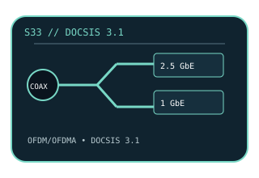

[ MODEL-SPECIFIC NETWORK HARDWARE ]
ARRIS SURFboard S33 DOCSIS 3.1 Cable Modem
Standalone multi-gigabit DOCSIS cable modem with 2.5GbE and 1GbE customer Ethernet handoffs; not a Wi-Fi router or telephone adapter.

EXACT MODEL: SURFboard S33 (North American retail model; match the model and hardware label). This record does not imply compatibility with S34 or other SURFboard variants.
Exact specifications and compatibility
| Model / SKU | ARRIS SURFboard S33; model identifier S33. |
|---|---|
| Modem standard | DOCSIS 3.1 with DOCSIS 3.0 fallback; 2×2 DOCSIS 3.1 OFDM/OFDMA and 32×8 DOCSIS 3.0 channel capability. |
| Interfaces | Coaxial F-connector for cable service; 1 × 2.5GbE RJ-45 and 1 × 1GbE RJ-45 for host/router handoff. No integrated Wi-Fi. |
| Downstream / upstream | ARRIS advertises service plans up to 2.5Gb/s downstream. DOCSIS 3.1 OFDM/OFDMA and 8-channel DOCSIS 3.0 upstream bonding provide upload capability; the provider sets the provisioned upstream rate and supported channel plan. |
| Telephone service | No telephone/voice ports or eMTA voice service; not a substitute for a provider-supplied voice modem. |
| Provider compatibility | ARRIS lists compatibility testing with major US cable providers, including Xfinity, Cox and Spectrum; obtain provider approval for the exact S33 and service tier before activation. |
| Firmware / host compatibility | Cable-provider-provisioned firmware and DOCSIS configuration; no ordinary PC modem driver. Ethernet works with a standard OS/network stack; check provider firmware certification. |
| Power and safety | 12V DC, 2A supply per product documentation. Use the supplied or manufacturer-approved adapter, keep the indoor unit dry and ventilated, and do not open the enclosure or obstruct its vents. |
Model-specific notes
The 2.5GbE port's link rate is not an Internet throughput promise. Upload rates, voice availability, activation and firmware are controlled by the cable operator.
Manufacturer specifications and manual
- SURFboard S33 official product specificationsARRIS/SURFboard specification and provider-compatibility information for the S33. Original page is gone; this is the Internet Archive’s copy.
- ARRIS S33 official documentation and downloadsManufacturer support record for S33 manuals, guides and other product documentation.
- ARRIS S33 official specifications support pageManufacturer model record for S33 technical specifications.